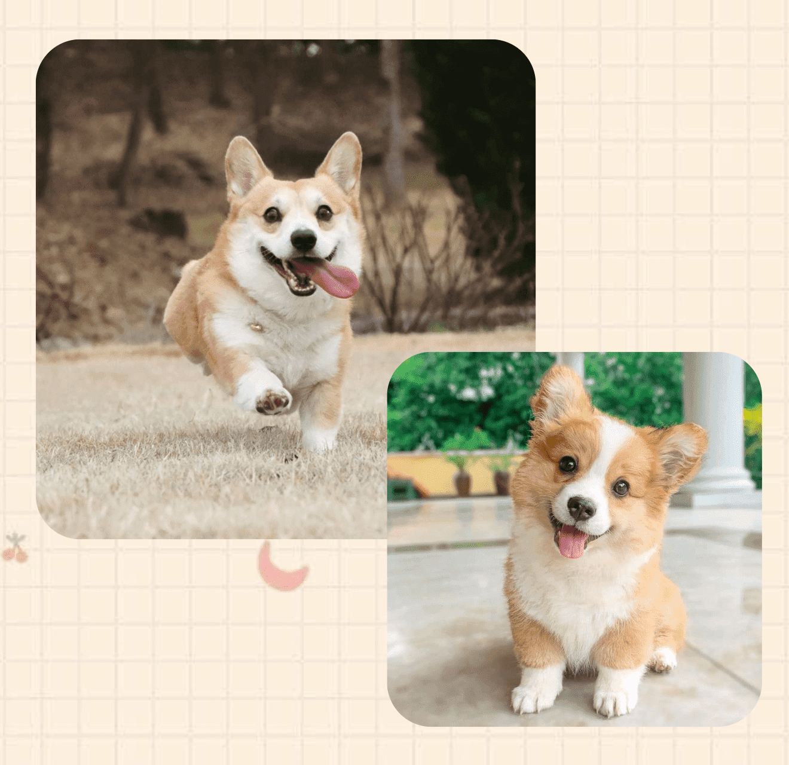

威爾斯柯基犬
（又名柯基犬。英語：Welsh Corgi，corgi在威爾斯文中意為矮狗)
雙耳直立，臉部無顯著特徵，短腿、短尾、身體長，體重約10公斤。
毛色有紅色、黑貂色、淡紅褐色、黑色等，胸部、四肢與頸部有白色。
威爾斯柯基犬通常分成卡提根、潘布魯克兩個品種。
1934年美國育犬協會承認為不同品種。
卡提根有大圓耳跟下垂尾巴；潘布魯克則是較圓的耳朵、較小的身材。
※潘布魯克的尾巴傳統上是斷尾成平貼的兔尾巴，讓他們看起來像無尾。

容易照顧
柯基屬於短毛犬，無體臭，容易梳理。對食物不挑剔，什麼都愛吃方便照顧。
活潑熱情
對人熱情，對小孩非常友善，會調節家庭的氣氛給你全家帶來很大的快樂。
宜動宜靜
成年後很少在家中上躥下跳、翻箱倒櫃，這與主人教育有密不可分的關係。
天資聰穎
幼年的柯基可在短時間內聽懂簡單口令，成年後服從性和判斷力更讓人嘆為觀止。


注意氣溫變化
柯基犬的呼吸道很容易出問題，氣候變化時要注意。
適量運動
柯基犬生性活潑好動，所以不能老是關在室內，而應給予適當的時間讓它在戶外活動，以保持其健康活躍的特性。
重視幼犬教育
柯基犬訓練要從小就開始，越早越好，服從性才會高。不能養成撕咬家中衣服、窗簾、沙發、床單、被子等壞習慣。
注意衛生
應經常為它梳刷清理，保持清潔美觀。還應定期洗澡、清險耳垢、牙垢，用溫水洗眼，修剪爪子等。每隔3~5天，用2%的硼酸水為它洗眼，以防止眼疾發生。

髖關節形成不良症 Cannine Hip Dysplasia （CHD）
髖關節形成不良症是指，關節在發育過程裡，成長速度不相符合而產生的軟組織病變。
骨頭在成長時應該要壓住關節，當上述狀況並沒有正常進行時，關節這時就會鬆弛，在髖關節鬆弛的狀況下，就會造成狗狗在行走、跳躍、跑步時不穩定，進而造成骨頭磨損。
飼主們大多能在狗狗6個月至1歲時就發現狗狗疼痛或跛行等行為異樣。
椎間盤疾病 Intervertebral Disk Disease（IVDD）
椎間盤相關疾病通常以短腿狗最為優先。
所以像是柯基這類的犬種就特別容易發生，因此椎間盤疾病可能更早在他們身上發生，需要早期的預防與治療。
椎間盤疾病的症狀視問題的嚴重程度和發生位置而異。在較輕微的病例中，通常是脊髓受到輕度的壓迫，犬隻不願意移動去上廁所、吃東西，或是一移動時，就會悲鳴或吠叫。也常會顯示出不協調的步伐，或看起來沒有足夠力量去行走。